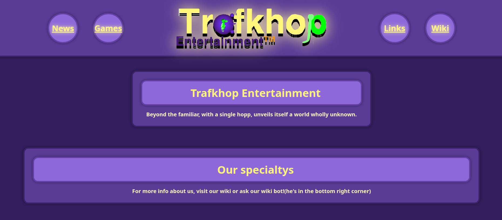
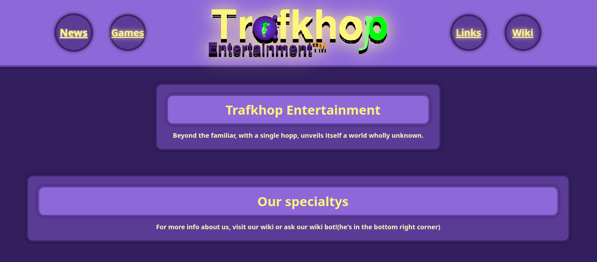
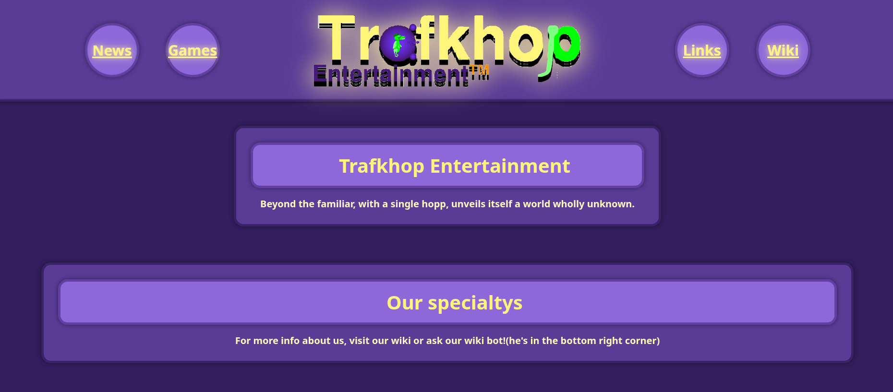
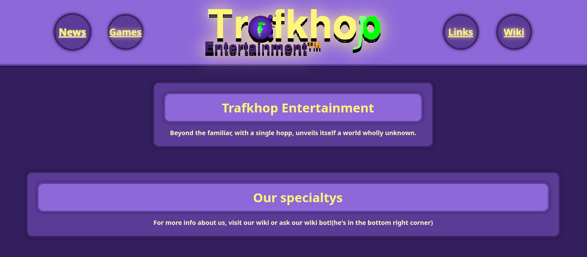

The Official Website for Trafkhop Entertainment!
Website Content
Home/Newspage
The Home und Newspage of the Website. Updates and other News will always be posted here.
Gamespage
A list of all of our games and an extra page for every game with all the infos you can imagine.
Links
A list of links to all of our accounts on the internet. Youtube for example.
Wiki
THe glorious Trafkwi. The knowlage base of our universe and the rest of it. Everything we do and have is available in the wiki!
History
The Website was created, cause HoppiTex wanted everything to do with the studio in one place.
On the 16.12.2025 the Website was created. On the 19. the html was done. On the 16.1.2026 the website was recoded to what is is now. ON the 17. alfonz ai chatbot wiki was added to be an interactive wiki. After that assets and content was slowly added.
Screenshots of website stages:
![1. The Prototype Phase (websitepic1.png) Description: This image displays an early, structural version of the Trafkhop Entertainment website with a minimalist, high-contrast design. Background: Plain white #ffffff background with no texture or gradients. Header: Logo: The Trafkhop Entertainment logo is centered at the top. The text Trafk is black, hop is lime green, and Entertainment is small and orange. The letter a in Trafk contains a purple bubble graphic. Navigation: A simple horizontal navigation bar sits below the logo with a thick black border. It contains text links: Home, Games, About, Links, and Members. Main Content: The section is titled News (underlined). News Item: A centered entry dated 01.01.2026. The text announces: Raufbold3b has a new Username! It is: 'HoppiTex'!. Button: A simple rectangular button with a thick black border labeled Old News. Footer: A minimal footer separated by a black line, containing copyright text © 2026 Trafkhop Entertainment™, a License link, and a Contact (E-Mail) link. Visual Style: This version relies heavily on standard HTML styling with very little CSS decoration (no rounded corners, shadows, or color themes).](trafkhopwebsite/websitepic1.png)
![2. The Design Overhaul (websitepic2.png) Description: This image shows a major visual redesign of the website, introducing the studio's signature purple color scheme and a card-based layout. Background: A solid dark purple background (likely #30185e). Header: Navigation: Four circular, purple navigation buttons float on the left and right sides (Home, Games on the left; Links, Wiki on the right). They have a lighter purple border and shadow. Logo: The logo is centered with a glowing effect/drop shadow, making it stand out against the dark background. Main Content (News Grid): The news section is arranged in a grid of six rectangular cards. Each card has a lighter purple background (#5a3998), a thick dark border, and rounded corners. Card Order (Top Row): Left: Website recoding (16.1.2026). Center: Founders new Username (1.1.2026). This card has a visible white scrollbar on the right. Right: Alfonz Wiki AI chatbot test (17.1.2026). Card Order (Bottom Row): Left & Center: Two cards labeled EMPTY (1.1.2026). Right: Older News (19.12.2025). This card also features a scrollbar. UI Elements: A chatbot icon (Botpress webchat) is visible in the bottom right corner as a purple circle with a white speech bubble. Visual Style: The design uses Neumorphism elements with soft shadows and rounded borders to create depth.](trafkhopwebsite/websitepic2.png)
![3. The Refined Current State (websitepic3.jpg) Description: This image represents the most current iteration of the website. It is visually very similar to the Design Overhaul but features an updated chronological order for the news content. The color pallete was also changed to be more blue/purple ish and more saturated. Background & Header: Identical to the Design Overhaul version, maintaining the deep purple theme and the glowing logo with circular navigation buttons. Main Content (News Grid Updates): The layout remains a 3-column grid, but the content has been reordered to show the newest information first (Left-to-Right). New Card Order (Top Row): Left: Alfonz Wiki AI chatbot test (17.1.2026) – Moved to the first position. Center: Website recoding (16.1.2026). Right: Founders new Username (1.1.2026) – Moved to the third position. Bottom Row: Remains the same with two EMPTY cards and the Older News card on the far right. Text & Typography: The font appears to be Noto Sans (Bold), appearing crisp and yellow/gold (#fff8bd or #fff37d) against the purple cards. Chatbot: The Alfonz/Botpress icon is present in the bottom right, confirming the integration mentioned in the first news card.](trafkhopwebsite/websitepic3.png) 


